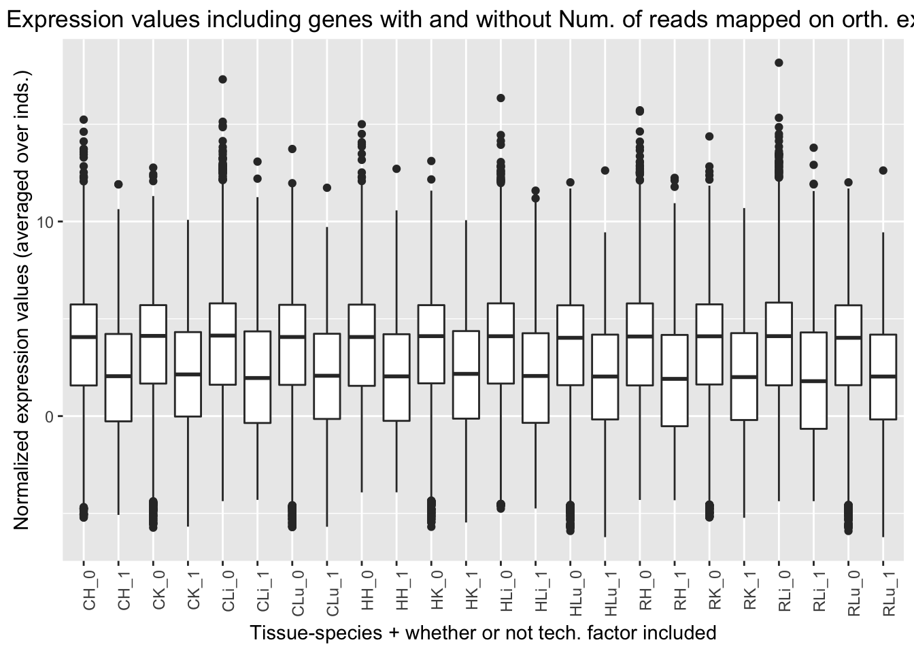
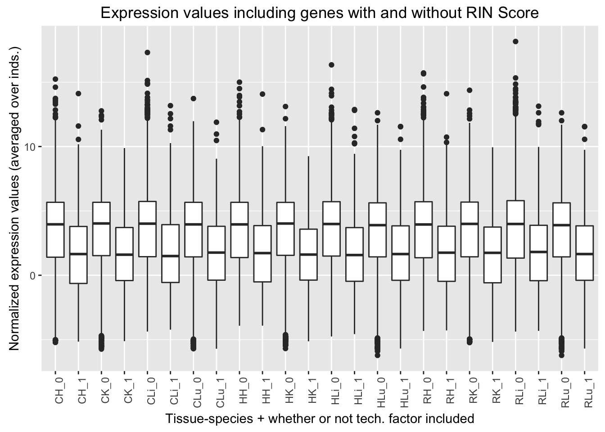

In the previous analysis, we found that the following genes appeared in the best set for more than 2,400 of the 16,616 genes.
RNA Extraction date 3-23-12 (2nd technical factor on the design matrix fed into GLMnet). Note: the samples that have the RNA Extraction date of 3-23-12 are all Human Individual 3 samples (H3H, H3K, H3Li, H3Lu)
Mix code 1000 (8th technical factor). The chimp 1 liver (chimp 4x0519) is the only sample that has this multiplexing mix code because it was the only sample that was only in multiplex mix 1.
Percentage overlapping a junction (13th technical factor). Note: this was highest in reads mapped in livers than all of the other tissues. It does not appear to be confounded with species.
Reads mapped on orthologous exons (15th technical factor). Note: this was higher in liver and lung samples than heart and kidney samples. It does not appear to be confounded with species.
We want to see the distribution of expression values for the genes in which the best set contains one of the technical variables or not. If the expression values for the genes in which the best set contains one of the technical variables are randomly distributed, then that is good and we probably won’t include it in the final model (used to determine DE genes). If the expression values for the genes in which the best set contains one of the technical variables are not randomly distributed, then we will consider including it in the final model when testing for DE genes.
# Load libraries
library("gplots")##
## Attaching package: 'gplots'## The following object is masked from 'package:stats':
##
## lowesslibrary("ggplot2")
# Load the data (biological and technical factors)
Best_set_bio_tech_var <- read.delim("~/Reg_Evo_Primates/ashlar-trial/data/Best_set_bio_tech_var.txt")
t_Best_set_bio_tech_var <- t(Best_set_bio_tech_var)
dim(t_Best_set_bio_tech_var)## [1] 16616 28# Load the data (expression counts data)
gene_counts_with_gc_correction <- read.delim("~/Reg_Evo_Primates/ashlar-trial/data/gc_cyclic_loess_random_var_gene_exp_counts")# Find average expression for each gene
chimp_hearts <- c(1, 5, 9, 13)
chimp_kidneys <- c(2,6,10,14)
chimp_livers <- c(3,7,11,15)
chimp_lungs <- c(4,8,12,16)
human_hearts <- c(20,24,28)
human_kidneys <- c(17,21,25,29)
human_livers <- c(18,22,26,30)
human_lungs <- c(19,23,27,31)
rhesus_hearts <- c(32,36,40,44)
rhesus_kidneys <- c(33,37,41,45)
rhesus_livers <- c(34,38,42,46)
rhesus_lungs <- c(35,39,43,47)
# For chimp hearts
exp_chimp_hearts <- as.data.frame(rowMeans(gene_counts_with_gc_correction[ , chimp_hearts]))
# For chimp kidneys
exp_chimp_kidneys <- as.data.frame(rowMeans(gene_counts_with_gc_correction[ , chimp_kidneys]))
# For chimp livers
exp_chimp_livers <- as.data.frame(rowMeans(gene_counts_with_gc_correction[ , chimp_livers]))
# For chimp lungs
exp_chimp_lungs <- as.data.frame(rowMeans(gene_counts_with_gc_correction[ , chimp_lungs]))
# For human hearts
exp_human_hearts <- as.data.frame(rowMeans(gene_counts_with_gc_correction[ , human_hearts]))
# For human kidneys
exp_human_kidneys <- as.data.frame(rowMeans(gene_counts_with_gc_correction[ , human_kidneys]))
# For human livers
exp_human_livers <- as.data.frame(rowMeans(gene_counts_with_gc_correction[ , human_livers]))
# For human lungs
exp_human_lungs <- as.data.frame(rowMeans(gene_counts_with_gc_correction[ , human_lungs]))
# For rhesus hearts
exp_rhesus_hearts <- as.data.frame(rowMeans(gene_counts_with_gc_correction[ , rhesus_hearts]))
# For rhesus kidneys
exp_rhesus_kidneys <- as.data.frame(rowMeans(gene_counts_with_gc_correction[ , rhesus_kidneys]))
# For rhesus livers
exp_rhesus_livers <- as.data.frame(rowMeans(gene_counts_with_gc_correction[ , rhesus_livers]))
# For rhesus lungs
exp_rhesus_lungs <- as.data.frame(rowMeans(gene_counts_with_gc_correction[ , human_lungs]))
# Make the data frame
avg_exp_values <- cbind(exp_chimp_hearts, exp_chimp_kidneys, exp_chimp_livers, exp_chimp_lungs, exp_human_hearts, exp_human_kidneys, exp_human_livers, exp_human_lungs, exp_rhesus_hearts, exp_rhesus_kidneys, exp_rhesus_livers, exp_rhesus_lungs)
rownames(avg_exp_values) <- row.names(gene_counts_with_gc_correction)
colnames(avg_exp_values) <- c("CH", "CK", "CLi", "CLu", "HH", "HK", "HLi", "HLu", "RH", "RK", "RLi", "RLu")
head(avg_exp_values)## CH CK CLi CLu HH HK
## ENSG00000000003 4.610868 6.396002 8.095469 5.391101 3.857809 6.931617
## ENSG00000000419 5.776325 5.204482 5.996511 5.432862 5.922276 5.660062
## ENSG00000000457 4.716621 5.185978 6.408613 5.111782 3.766371 4.320687
## ENSG00000000460 1.657578 1.692573 2.465693 2.189239 1.265669 2.309113
## ENSG00000000938 4.243727 3.971252 5.087452 7.650402 4.877109 3.562921
## ENSG00000000971 6.332304 5.125277 11.306291 6.282460 6.564142 5.757620
## HLi HLu RH RK RLi RLu
## ENSG00000000003 6.880175 4.857195 4.563435 7.071678 8.146930 4.857195
## ENSG00000000419 5.990137 5.463117 5.407861 5.223920 5.697787 5.463117
## ENSG00000000457 4.911001 4.272097 4.385651 5.077154 5.341901 4.272097
## ENSG00000000460 3.631794 2.487244 1.584310 1.547638 1.358645 2.487244
## ENSG00000000938 5.807408 7.568003 2.465641 2.432226 3.957756 7.568003
## ENSG00000000971 10.279503 7.651720 5.203002 6.511264 11.790392 7.651720# Add the 4 relevant technical variables
avg_exp_values_tech <- cbind(avg_exp_values, t_Best_set_bio_tech_var[,10], t_Best_set_bio_tech_var[,16], t_Best_set_bio_tech_var[,21], t_Best_set_bio_tech_var[,23], t_Best_set_bio_tech_var[,26])
colnames(avg_exp_values_tech) <- c("CH", "CK", "CLi", "CLu", "HH", "HK", "HLi", "HLu", "RH", "RK", "RLi", "RLu", "Extraction_3-23-12", "Mix_code_1000", "Perc_overlapping_junction", "Reads_mapped_on_ortho_exons", "RIN score")
# Check # of genes with technical variables
colSums(avg_exp_values_tech)## CH CK
## 55484.39 56037.61
## CLi CLu
## 56485.17 55182.71
## HH HK
## 55231.61 55509.20
## HLi HLu
## 56193.66 54984.79
## RH RK
## 55485.42 55221.47
## RLi RLu
## 56196.48 54984.79
## Extraction_3-23-12 Mix_code_1000
## 2511.00 2522.00
## Perc_overlapping_junction Reads_mapped_on_ortho_exons
## 3434.00 2425.00
## RIN score
## 1158.00# Put in a format ggplot2 likes
# All the tissue-species combinations
CH <- as.data.frame(rep("CH", times = 16616))
CK <- as.data.frame(rep("CK", times = 16616))
CLi <- as.data.frame(rep("CLi", times = 16616))
CLu <- as.data.frame(rep("CLu", times = 16616))
HH <- as.data.frame(rep("HH", times = 16616))
HK <- as.data.frame(rep("HK", times = 16616))
HLi <- as.data.frame(rep("HLi", times = 16616))
HLu <- as.data.frame(rep("HLu", times = 16616))
RH <- as.data.frame(rep("RH", times = 16616))
RK <- as.data.frame(rep("RK", times = 16616))
RLi <- as.data.frame(rep("RLi", times = 16616))
RLu <- as.data.frame(rep("RLu", times = 16616))
# Add expression and technical variables for each tissue-species combination
ggplot_avg_value_CH <- cbind(avg_exp_values_tech[,1], CH, avg_exp_values_tech[,13], avg_exp_values_tech[,14], avg_exp_values_tech[,15], avg_exp_values_tech[,16], avg_exp_values_tech[,17])
colnames(ggplot_avg_value_CH) <- c("Avg_Expression", "Sample", "RNA_Extra", "Mix_1000", "Perc_overlap_junct", "Reads_mapped_orth_exon", "RIN_Score")
ggplot_avg_value_CK <- cbind(avg_exp_values[,2], CK, avg_exp_values_tech[,13], avg_exp_values_tech[,14], avg_exp_values_tech[,15], avg_exp_values_tech[,16], avg_exp_values_tech[,17])
colnames(ggplot_avg_value_CK) <- colnames(ggplot_avg_value_CH)
ggplot_avg_value_CLi <- cbind(avg_exp_values[,3], CLi, avg_exp_values_tech[,13], avg_exp_values_tech[,14], avg_exp_values_tech[,15], avg_exp_values_tech[,16], avg_exp_values_tech[,17])
colnames(ggplot_avg_value_CLi) <- colnames(ggplot_avg_value_CH)
ggplot_avg_value_CLu <- cbind(avg_exp_values[,4], CLu, avg_exp_values_tech[,13], avg_exp_values_tech[,14], avg_exp_values_tech[,15], avg_exp_values_tech[,16], avg_exp_values_tech[,17])
colnames(ggplot_avg_value_CLu) <- colnames(ggplot_avg_value_CH)
ggplot_avg_value_HH <- cbind(avg_exp_values[,5], HH, avg_exp_values_tech[,13], avg_exp_values_tech[,14], avg_exp_values_tech[,15], avg_exp_values_tech[,16], avg_exp_values_tech[,17])
colnames(ggplot_avg_value_HH) <- colnames(ggplot_avg_value_CH)
ggplot_avg_value_HK <- cbind(avg_exp_values[,6], HK, avg_exp_values_tech[,13], avg_exp_values_tech[,14], avg_exp_values_tech[,15], avg_exp_values_tech[,16], avg_exp_values_tech[,17])
colnames(ggplot_avg_value_HK) <- colnames(ggplot_avg_value_CH)
ggplot_avg_value_HLi <- cbind(avg_exp_values[,7], HLi, avg_exp_values_tech[,13], avg_exp_values_tech[,14], avg_exp_values_tech[,15], avg_exp_values_tech[,16], avg_exp_values_tech[,17])
colnames(ggplot_avg_value_HLi) <- colnames(ggplot_avg_value_CH)
ggplot_avg_value_HLu <- cbind(avg_exp_values[,8], HLu, avg_exp_values_tech[,13], avg_exp_values_tech[,14], avg_exp_values_tech[,15], avg_exp_values_tech[,16], avg_exp_values_tech[,17])
colnames(ggplot_avg_value_HLu) <- colnames(ggplot_avg_value_CH)
ggplot_avg_value_RH <- cbind(avg_exp_values[,9], RH, avg_exp_values_tech[,13], avg_exp_values_tech[,14], avg_exp_values_tech[,15], avg_exp_values_tech[,16], avg_exp_values_tech[,17])
colnames(ggplot_avg_value_RH) <- colnames(ggplot_avg_value_CH)
ggplot_avg_value_RK <- cbind(avg_exp_values[,10], RK, avg_exp_values_tech[,13], avg_exp_values_tech[,14], avg_exp_values_tech[,15], avg_exp_values_tech[,16], avg_exp_values_tech[,17])
colnames(ggplot_avg_value_RK) <- colnames(ggplot_avg_value_CH)
ggplot_avg_value_RLi <- cbind(avg_exp_values[,11], RLi, avg_exp_values_tech[,13], avg_exp_values_tech[,14], avg_exp_values_tech[,15], avg_exp_values_tech[,16], avg_exp_values_tech[,17])
colnames(ggplot_avg_value_RLi) <- colnames(ggplot_avg_value_CH)
ggplot_avg_value_RLu <- cbind(avg_exp_values[,12], RLu, avg_exp_values_tech[,13], avg_exp_values_tech[,14], avg_exp_values_tech[,15], avg_exp_values_tech[,16], avg_exp_values_tech[,17])
colnames(ggplot_avg_value_RLu) <- colnames(ggplot_avg_value_CH)
# Combine all of the data frames
ggplot_avg_value <- rbind(ggplot_avg_value_CH, ggplot_avg_value_CK, ggplot_avg_value_CLi, ggplot_avg_value_CLu, ggplot_avg_value_HH, ggplot_avg_value_HK, ggplot_avg_value_HLi, ggplot_avg_value_HLu, ggplot_avg_value_RH, ggplot_avg_value_RK, ggplot_avg_value_RLi, ggplot_avg_value_RLu)
# Make labels
labels_RNA_Extra <- as.data.frame(paste(ggplot_avg_value$Sample, ggplot_avg_value$RNA_Extra, sep="_"))
colnames(labels_RNA_Extra) <- c("RNA_Extra_labels")
labels_Mix_1000 <- as.data.frame(paste(ggplot_avg_value$Sample, ggplot_avg_value$Mix_1000, sep="_"))
colnames(labels_Mix_1000) <- c("Mix_labels")
labels_Perc_overlap_junct <- as.data.frame(paste(ggplot_avg_value$Sample, ggplot_avg_value$Perc_overlap_junct, sep="_"))
colnames(labels_Perc_overlap_junct) <- c("Perc_overlap_junct_labels")
labels_Reads_mapped_orth_exon <- as.data.frame(paste(ggplot_avg_value$Sample, ggplot_avg_value$Reads_mapped_orth_exon, sep="_"))
colnames(labels_Reads_mapped_orth_exon) <- c("Reads_mapped_orth_exon_labels")
labels_RIN_Score <- as.data.frame(paste(ggplot_avg_value$Sample, ggplot_avg_value$RIN_Score, sep="_"))
colnames(labels_RIN_Score) <- c("RIN_Score_labels")
ggplot_avg_value_labels <- cbind(ggplot_avg_value, labels_RNA_Extra, labels_Mix_1000, labels_Perc_overlap_junct, labels_Reads_mapped_orth_exon, labels_RIN_Score)
# Make the plots
ggplot(ggplot_avg_value_labels, aes(factor(RNA_Extra_labels), Avg_Expression)) + geom_boxplot() + ylab("Normalized expression values (averaged over inds.)") + labs(title = "Expression values including genes with and without RNA Extraction Date 3-23-12") + xlab("Tissue-species + whether or not tech. factor included")ggplot(ggplot_avg_value_labels, aes(factor(Mix_labels), Avg_Expression)) + geom_boxplot() + ylab("Normalized expression values (averaged over inds.)") + labs(title = "Expression values including genes with and without Master Mix Code 1000") + xlab("Tissue-species + whether or not tech. factor included")ggplot(ggplot_avg_value_labels, aes(factor(Perc_overlap_junct_labels), Avg_Expression)) + geom_boxplot() + ylab("Normalized expression values (averaged over inds.)") + labs(title = "Expression values including genes with and without Perc. overlapping junctions") + xlab("Tissue-species + whether or not tech. factor included")ggplot(ggplot_avg_value_labels, aes(factor(Reads_mapped_orth_exon_labels), Avg_Expression)) + geom_boxplot() + ylab("Normalized expression values (averaged over inds.)") + labs(title = "Expression values including genes with and without Num. of reads mapped on orth. exons") + xlab("Tissue-species + whether or not tech. factor included")
ggplot(ggplot_avg_value_labels, aes(factor(RIN_Score_labels), Avg_Expression)) + geom_boxplot() + ylab("Normalized expression values (averaged over inds.)") + labs(title = "Expression values including genes with and without RIN Score") + xlab("Tissue-species + whether or not tech. factor included")